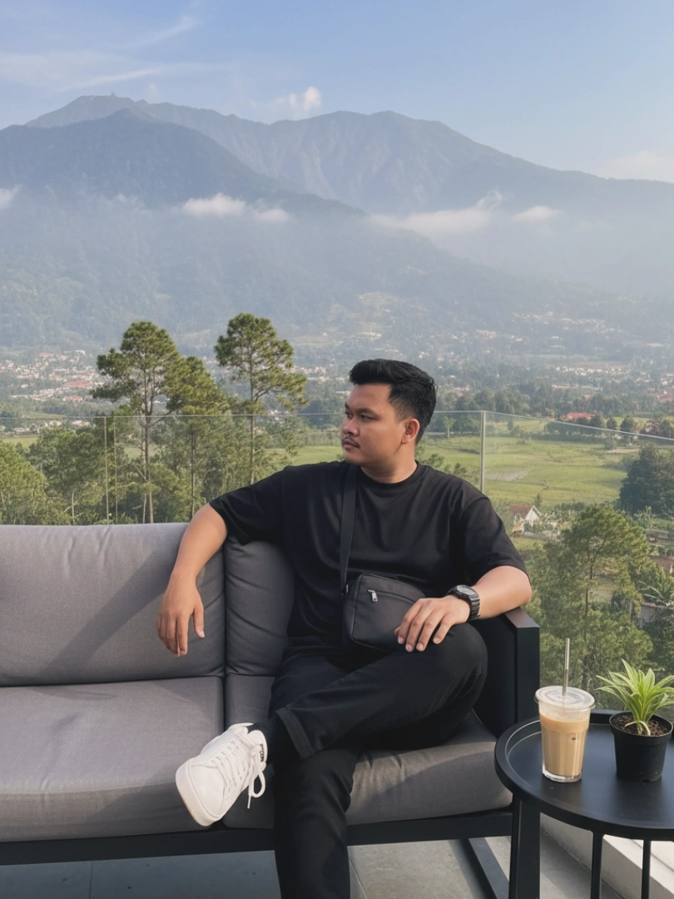

Mengenal lebih dekat siapa saya

IT Support Profesional
IT Support profesional dengan pengalaman dalam pengelolaan dan pemeliharaan infrastruktur teknologi informasi untuk mendukung kelancaran operasional perusahaan. Berpengalaman dalam melakukan instalasi, konfigurasi, serta troubleshooting perangkat keras dan perangkat lunak pada lingkungan kerja dengan banyak pengguna.
Visualisasi kompetensi dan keahlian teknis
Perjalanan saya dalam dunia kerja dan organisasi
Riwayat pendidikan saya
2025 - Sekarang
Teknik Informatika
Mahasiswa Aktif | IPK: 8.8
2015 - 2016
Teknik Komputer dan Jaringan
Lulus